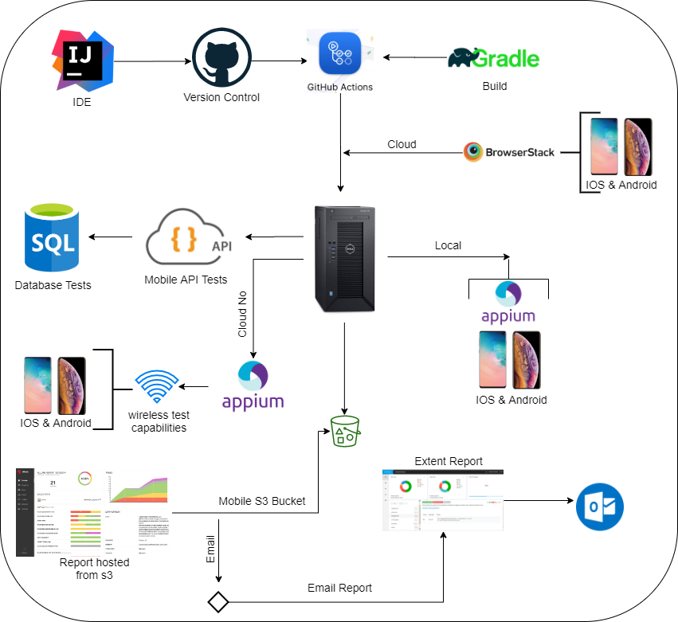

Home
Mobile Test Framework
Architecture

Supported Platforms
Appium supports app automation across a variety of platforms, like iOS,Android, from any platform. Each platform is supported by one or more "drivers", which know how to automate that particular platform. Choose a driver below for specific information about how that driver works and how to set it up:
- Android
- IOS
- The XCUITest
Why Appium?
- Appium is an Open source automation tool used for cross platform testing like native, hybrid and web applications on both the platforms IOS and Android. Its capability for testing all kinds of tools under one platform, makes it a multipurpose and convenient testing tool.Appium is called as a cross platform testing tool because it uses JSON wire protocol internally to interact with native apps of IOS and Android using Selenium Webdriver.
Setup & Tools
- Download and install Nodejs
npm install -g appium
npm install -g appium-doctorverify all appium dependencies - Download Appium Desktop download the latest release
- Install InteliJ Community Edition
- Java JDK_11 install jdk_11 version
- Gradle
- Allure
- Set the below environment variables
* JAVA_HOME:Â Pointing to the Java SDK folder\bin
* GRADLE_HOME: Pointing to Gradle directory\bin.
* ALLURE_HOME: Pointing to allure directory\bin.
* APPIUM_HOME: Pointing appium main.js from global location.
* NODE_HOME: Pointing nodejs installation.
- For more details navigate to the above Wiki Page
Connect - Local Devices:
Connect an Android and an iOS Device using a USB cable to your PC
- Follow documentation for device connection
Getting Started
$ git clone
$ cd
$ import project from intelij as a gradle project
$ gradle clean
$ gradle build
$ gradle task E2E
$ gradle allureReport
$ gradle allureServe
Write your first user journey
Create new class and name as the TC00_E2E_TEST-**
- Provide jira link in @Link
- Provide all the api components as @Feature
- Provide test severity and description
- Write test
- Use CatchBlock in try/catch section